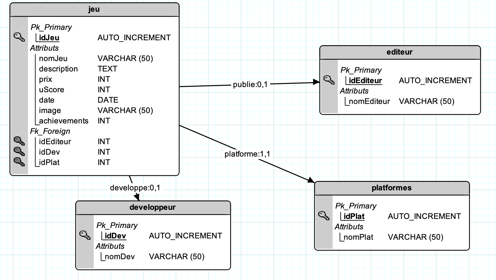
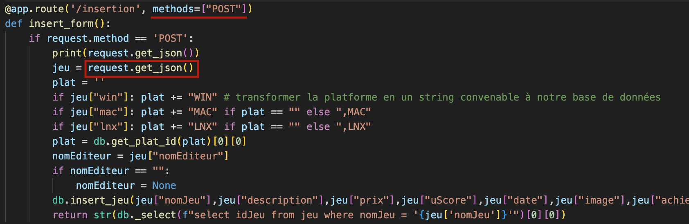
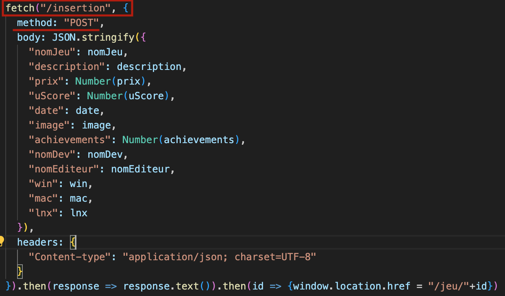

Notre base de données contient un total de 90 000 entrées, voici son MLD :
Télécharger la BDD : steamDatabase.db
Il y a une vue admin pour chaque table, avec aussi des vues complexes :
Nous pouvons aussi faire une recherche avec le mot clé et le prix :
| Fonction | Description | Entrée(s) | Sortie(s) |
|---|---|---|---|
| _select | Exécute une requête type select | Requête SQL | Résultat de la requête |
| get_plat_id | Requête qui renvoie l'id de la plateforme à partir des noms des plateformes | Noms des plateformes | Id correspondant |
| get_dev_id | Renvoie le id du développeur à partir de son nom | Nom du développeur | Id correspondant |
| insert_from_id | Demande au API les données d’un jeu, formate la réponse et exécute la fonction pour l’insérer dans la BDD | Id du jeu | Fonction insert_jeu |
| get_featured | Demande au API les jeux en vedette, puis les cherche dans la BDD, s’ils n’y sont pas alors elle exécute la fonction insert_from_id | La liste des jeux en vedette | |
| get_jeux_by_dev | Retourne les jeux faits par un certain développeur à partir de son id | Id du développeur | Liste des jeux |
| get_jeux_by_pub | Retourne les jeux publiés par un certain éditeur à partir de son id | Id de l’éditeur | Liste des jeux |
| get_jeux_by_annee | Renvoie une liste des jeux sortis pendant l'année précisée | Année | Liste des jeux |
| get_jeux_by_plat | Renvoie une liste des jeux jouables sur la plateforme précisée | Id de la plateforme | Liste des jeux |
| get_all_jeux | Renvoie (avec une limite de 100) les jeux sans les trier ou les filtrer | Liste des jeux | |
| get_jeu_by_id | Renvoie le jeu dont le id a été précisé | Id du jeu | Données sur le jeu |
| get_jeu_by_filter | Renvoie une liste des jeux correspondants aux filtres précisés | Mot clé et prix | Liste des jeux |
| get_admin | Renvoie 200 entrées max de la table précisée | Les tables possibles sont : (jeu, développeur, éditeur, plateformes) | Liste des entrées |
| get_admin_param | Admin complexes, mêmes tables que admin | La table, le paramètre et sa valeur | Liste des entrées |
| get_columns | Renvoie le nom des colonnes d’une table | Nom de la table | Liste des colonnes |
| insert_jeu | Insert un nouveau jeu dans la BDD | Nom du jeu, description du jeu, prix du jeu, rating du jeu, date du jeu, image du jeu, nombre de succès, nom du développeur, nom de l’éditeur, l’Id de la plateforme | Fonction _select |
| insert_dev | Insert un nouveau développeur dans la BDD | Nom du développeur | Fonction _select |
| insert_editeur | Insert un nouvel éditeur dans la BDD | Nom de l’éditeur | Fonction _select |
| dev_existe | Vérifie si le développeur est dans la BDD et, si oui, retourne son Id. | Nom du développeur | Id correspondant |
| editeur_existe | Vérifie si l’éditeur est dans la BDD et, si oui, retourne son Id. | Nom de l’éditeur | Id correspondant |
| format_all | Fait en sorte que toutes les descriptions dans la liste jeux passent par la fonction reduire_desc | Liste jeux | Liste jeux modifiée |
| reduire_desc | Enlève les balises <a> et <img> du texte récupéré avec la BDD. | La description | La Description réduite |
Dans le serveur flask :
Dans le javascript d'insertion :
Accéder à notre code : page Github